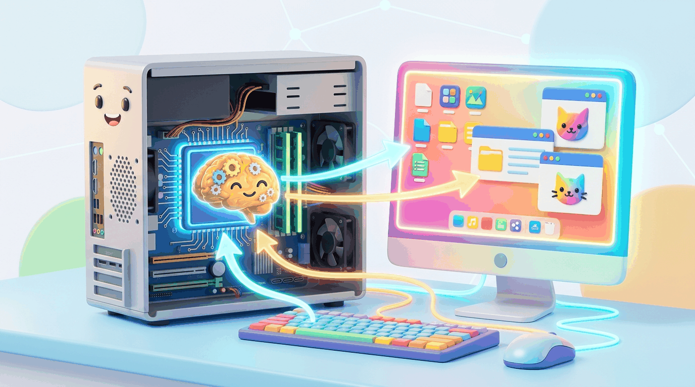

| نوع الوحدة | اسم الجهاز / الأداة | الوظيفة ونوع البيانات |
|---|---|---|
| وحدات الإدخال (Input) | لوحة المفاتيح (Keyboard) | إدخال الحروف والأرقام والنصوص المكتوبة. |
| وحدات الإدخال (Input) | الفأرة وشاشة اللمس (Mouse/Touch) | إدخال أوامر التوجيه والاختيار والتحكم في المؤشر. |
| وحدات الإدخال (Input) | الميكروفون (Microphone) | إدخال الأصوات والتسجيلات الصوتية إلى الكمبيوتر. |
| وحدات الإدخال (Input) | الماسح الضوئي (Scanner) والكاميرا | إدخال الصور والمستندات الورقية إلى الكمبيوتر. |
| وحدات الإخراج (Output) | شاشة العرض (Screen) | إخراج وعرض المعلومات المرئية (نصوص، صور، فيديو). |
| وحدات الإخراج (Output) | الطابعة (Printer) | إخراج النصوص والصور مطبوعة على الورق. |
| وحدات الإخراج (Output) | مكبر الصوت وسماعات الرأس (Speakers) | إخراج المعلومات المسموعة والصوتيات. |
| وحدات الإخراج (Output) | مركب الكلام وطريقة برايل الطرفية | إخراج نصوص مسموعة أو رموز بارزة لذوي الهمم. |
| المشكلة التكنولوجية | خطوات الحل الصحيحة المعتمدة |
|---|---|
| عدم عمل لوحة المفاتيح أو الفأرة | 1) التأكد من توصيل كابل الجهاز في المنفذ الصحيح. 2) إعادة تشغيل جهاز الكمبيوتر. 3) استبدالها بجهاز آخر في حالة التلف. |
| توقف الشاشة وتجمد التطبيقات (Freezing) | 1) الضغط معاً على مفاتيح (Ctrl + Alt + Del) وإغلاق البرنامج المتوقف من إدارة المهام. 2) إعادة تشغيل الجهاز. |
| صعوبة العثور على ملف تم حفظه | 1) البحث في مجلد التنزيلات (Downloads). 2) استخدام صندوق البحث (Search Box) في شريط المهام وكتابة اسم الملف. |
| عدم القدرة على فتح تطبيق معين | 1) إعادة تشغيل الجهاز. 2) التأكد من تحديث البرنامج. 3) حذف البرنامج وإعادة تثبيته مجدداً. |
التكنولوجيا وسيلة عشان تطور نفسك وتتعلم وتبدع.. اقرأ كل سؤال بتركيز، ركز في المصطلحات والفرق بين أجهزة الإدخال والإخراج، وتوكل على الله.. الدرجة النهائية في جيبك يا بطل!